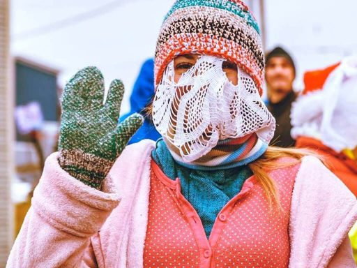
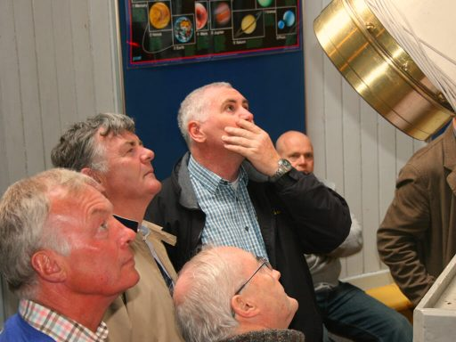
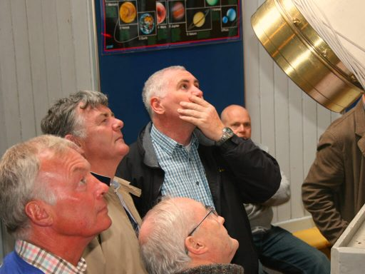

Galway is a vibrant city full of sights to see and activities to take part in. Whether
you want to sit in Eyre Square, visit The Galway Cathedral or experience some culture
at the Galway Museum there is something for everyone.
Some examples of the events coming up in the next few weeks in Galway are:
New Inn Mummers Festival 7th January:

Music For Galway Mid-Winter Festival 20-22 January:
 Astrofest - Galway Astronomy Festival 28 January:

Astrofest - Galway Astronomy Festival 28 January:
